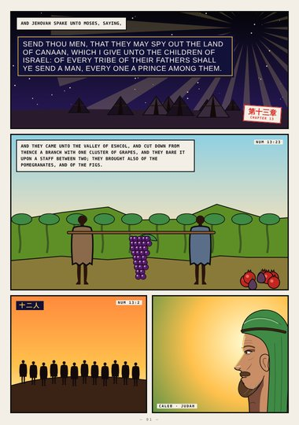
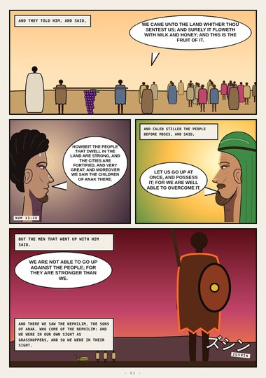
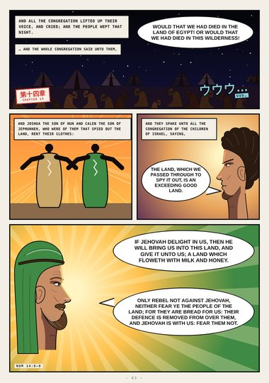
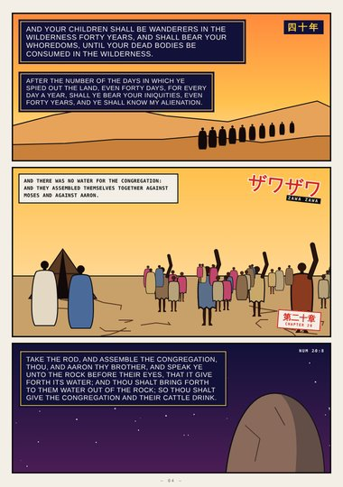
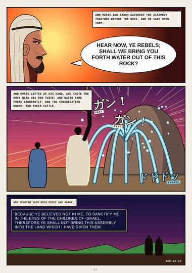
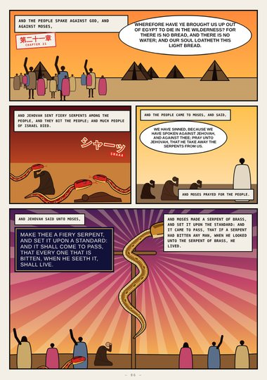
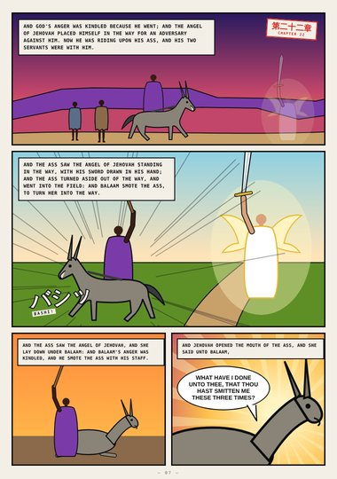
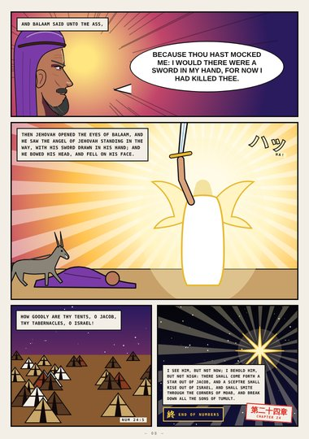

Numbers (digest) · Book One · Numbers 13–24
In the Wilderness
The twelve spies and the grapes of Eshcol, the evil report, forty years, the rock smitten twice, the fiery serpents and the serpent of brass, Balaam's ass, and a star out of Jacob.
Digest edition: an early, abridged first draft (highlights only). The full edition is replacing it.
Start reading ›Pages
 CoverCoverNumbers 13–24
CoverCoverNumbers 13–24
Page 1The Twelve SpiesNumbers 13:1–23
Page 2The Evil ReportNumbers 13:27–33
Page 3The People WeptNumbers 14:1–9
Page 4Forty YearsNumbers 14:33–20:8
Page 5He Smote the Rock TwiceNumbers 20:10–12
Page 6The Serpent of BrassNumbers 21:5–9
Page 7Balaam's AssNumbers 22:22–28
Page 8A Star out of JacobNumbers 22:29–24:17